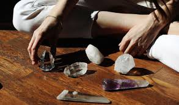
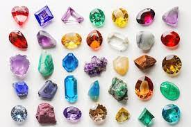

Healing Properties
Learn how gemstones are used in alternative healing practices to promote physical, emotional, and spiritual well-being.

The Significance of Gemstones
Gemstones have captivated human interest for millennia, not only for their exquisite appearance but also for their reputed metaphysical properties. These natural wonders are said to possess energies that can influence our emotions and overall well-being. Understanding the unique properties of different gemstones can enhance your connection with them, helping you find the one that resonates with your needs.
Key Gemstones and Their Benefits
Amethyst: Valued for its tranquil and soothing energy, amethyst is believed to ease stress and enhance spiritual clarity.
Rose Quartz: Known as the stone of unconditional love, it fosters self-love, emotional healing, and harmonious relationships.
Citrine: Often associated with optimism and prosperity, citrine is thought to boost creativity and motivation, bringing joy and enthusiasm into one's life.
These stones are just a glimpse into the myriad of healing gems available, each with its distinct traits.
Integrating Gemstones into Your Life
Incorporating gemstones into daily life can be simple and fulfilling. You might wear them as jewelry, place them in your living space, or use them during meditation. While their benefits can support emotional and spiritual wellness, they complement but do not replace traditional health practices. Explore, experiment, and let the energy of gemstones guide your journey to balance and inspiration.